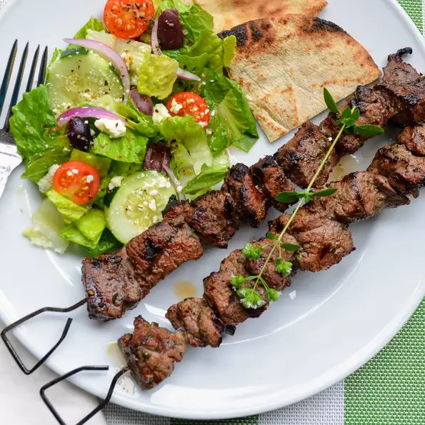

Lamb Souvlaki Recipe

Lamb Souvlaki
Tender pieces of lamb, marinated in a Greek lemon vinaigrette, threaded on skewers and char-grilled to perfection. I like to serve these with rosemary garlic roasted potatoes, a Greek salad, and pita bread.
Ingredients
- 1/3 cup olive oil
- 1 1/2 tablespoons freshly squeezed lemon juice
- 1 1/2 tablespoons chopped fresh oregano
- 2 cloves garlic, minced
- 1/2 teaspoon salt
- 1/4 teaspoon ground black pepper
- 1/2 pounds boneless leg of lamb, trimmed of all fat and cut into 1-inch cubes>
Steps
- Whisk olive oil, lemon juice, red wine vinegar, oregano, garlic, salt, and pepper together in a medium bowl. Add cubed lamb and stir until all of the lamb is coated with the marinade. Cover and refrigerate 3 hours, or overnight.
- Preheat an outdoor grill for medium-high heat and lightly oil the grate.
- Thread marinated lamb onto skewers, reserving any remaining marinade. Grill skewers until desired doneness, 10 to 12 minutes, basting with the reserved marinade and turning occasionally for even cooking.